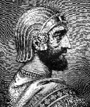

Büyük Keyhüsrev (MÖ 600-529) günümüz Türkiye’sinin, İran ve Irak’ın büyük bir bölümünü fethetmiş, antik dünyanın en büyük güçlerinden biri olan Pers İmparatorluğu’nu kurmuştur. İncil’de ondan Yahudileri Babil Esareti’nden kurtaran ve Kudüs’e dönmelerine izin veren kral olarak bahsedilir. Bu olayın MÖ 539’da gerçekleştiğine inanılmaktadır.

Babasının MÖ 552’de ölümünden sonra Keyhüsrev, Küçük Persis Krallığı’nın hükümdarı oldu. Hemen ardından fetih hareketlerine girişti. Med İmparatorluğu ve Lidya İmparatorluğu’nun da içlerinde bulunduğu komşu devletleri fethetti. Zengin Lidya Kralı Croesus’u (MÖ 595-547) esir aldı. Kralı canlı canlı yakacakken kulağına gelen bir kehanet onu bağışlamasına neden oldu.
İncil’de Keyhüsrev’den MÖ 539 yılında Babil’e saldırdığı için bahsedilir. Babil’in kontrolünü ele geçirir geçirmez Yahudiler’e elli yıl önce ayrılmak zorunda bırakıldıkları anavatanlarına dönmeleri için izin vermiştir.
Babil’in fethi Keyhüsrev’in son büyük toprak kazanımı oldu. Yirmi yıldan kısa bir süre içerisinde batıda İstanbul Boğazı’ndan doğuda Himalayalar’a kadar uzanan bir imparatorluk kurmuştur. Keyhüsrev aynı zamanda egemenliği altındaki halklara karşı gösterdiği dini hoşgörüyle de büyük bir üne kavuşmuştu.
Keyhüsrev MÖ 530’da öldü. Pers İmparatorluğu’nun o zamanki başkenti Pasargad’a gömüldü. Bu şehir günümüzde İran sınırları içinde yer almaktadır. Kurduğu hanedanlık, ölümünün ardından Büyük İskender (MÖ 356-323) tarafından fethedilene kadar (MÖ 330) Yunan şehir devletleri ile sayısız savaş yapmıştır.
Ek Bilgiler
1- Ölümünden yüzyıllar sonra Keyhüsrev’in hayatını anlatan tarihi bir kitap yazıldı: Cyropaedia. Bu kitap ABD’nin üçüncü başkanı Thomas Jefferson’ın (1743-1826) en sevdiği kitaplardan biridir.
2- Keyhüsrev’in adı “Eski Ahit”in üç kitabında anılmaktadır: “Ezra”, “Isaiah” ve “Daniel”. Söylendiğine göre Keyhüsrev’in Yahudileri kurtarışı Daniel peygamber tarafından önceden haber verilmiştir.
3- Davidian Tarikatı’nın lideri David Koresh (1959-1993) kendisinin Keyhüsrev’in reenkarnasyonu olduğuna inanıyordu. Kendisine verdiği isim Yahudi literatüründe Keyhüsrev’e verilen isimden geliyordu: “Koresh”. Koresh ve takipçileri 1993 yılında ABD hükümetinin yaşadıkları yere düzenlediği bir baskın sırasında öldürüldüler.